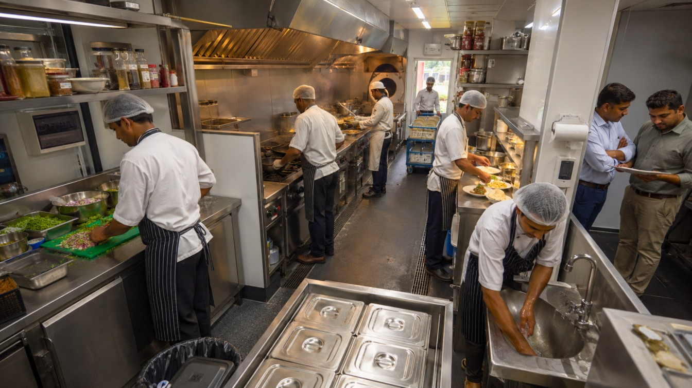
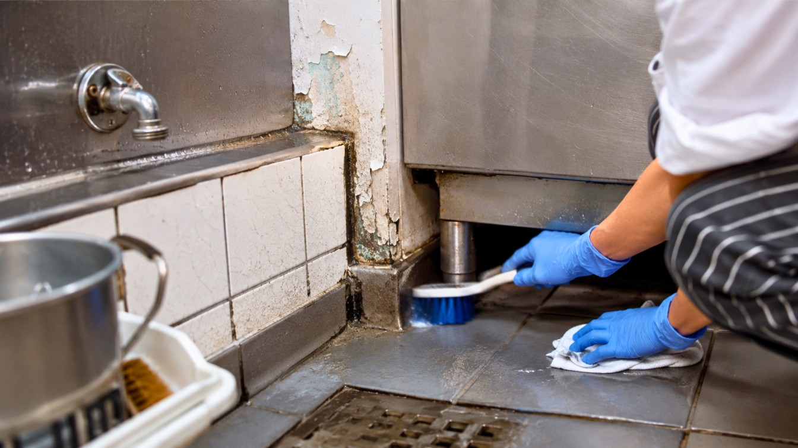
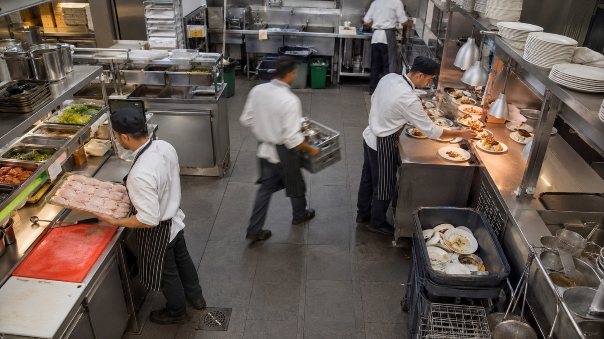
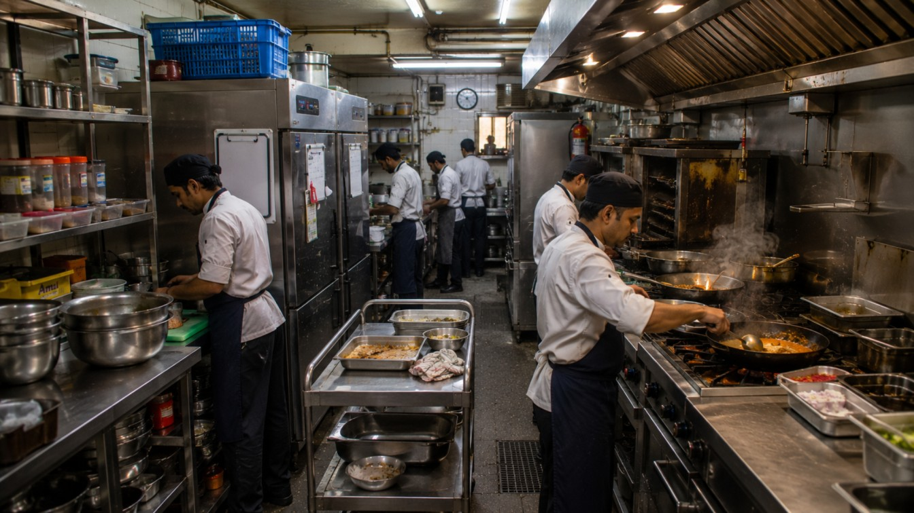

Designing Kitchens That Inspectors Love, And Operators Never Worry About.
Every restaurant owner knows the feeling.
Someone walks into the kitchen wearing an inspector’s badge.
Suddenly, every detail matters.
Is everything in place?
Has the team followed every procedure?
Will today’s inspection uncover something we have missed?
Over the last few years, inspections have become more rigorous, documentation more detailed, and enforcement more stringent.
What once earned a warning can now result in penalties, operational disruption, corrective work, or even temporary closure.
Most restaurant operators respond by tightening SOPs, increasing cleaning schedules, conducting internal audits, and retraining their teams.
All of these actions are important.
But they do not address the biggest source of compliance risk.
Because the most expensive compliance failures rarely begin during operations.
They begin much earlier. At the drawing board.

You Cannot Clean Your Way Out of a Design Problem.
After more than 25 years of designing restaurant and food-and-beverage spaces, I have seen the same pattern repeatedly.
The restaurants that struggle during inspections are not always run by careless operators.
Often, they are run by committed teams working inside kitchens that were never designed to support compliance in the first place.
When raw food preparation sits too close to plating, the team must constantly manage contamination risk.
When a handwashing station is inconveniently located, staff are more likely to bypass it during peak service.
When surfaces are difficult to clean, no amount of sanitiser can completely compensate.
When ventilation was designed for an older menu, additional heat, grease, and condensation become daily operational problems.
The team may keep fighting these issues
But eventually, the building wins.
Compliance is not only an operational responsibility.
It is a design responsibility.

The Hidden Design Failures Inspectors Notice.
Many compliance risks remain invisible during the design and construction process. They only become obvious once the restaurant begins operating under pressure.
Here are five of the most common design problems we encounter.
1. A Layout That Encourages Cross-Contamination.
Raw proteins, vegetables, cooked food, clean utensils, dirty dishes, and waste should not move through the same overlapping paths. But in many kitchens, they do. A chef should not have to carry raw chicken past finished plates. A steward should not need to move soiled utensils through a clean preparation zone. Waste should not travel through the same route used for incoming ingredients. When these movements intersect, cross-contamination is no longer just a possibility. It becomes an eventuality. Operational procedures can reduce the risk.
But good design can remove much of the risk entirely.

2. Surfaces That Can Never Truly Be Clean.
Cracked grout. Unsealed wood. Peeling paint. Porous countertops. Damaged floor joints. Painted drywall in wet or high-splash areas.
These materials may look acceptable when the restaurant opens, but daily service exposes every weakness.
Moisture enters gaps. Grease settles into joints. Bacteria find spaces that staff cannot easily reach. No cleaning schedule can fully compensate for materials that were not selected for a commercial kitchen environment. Compliance-first material selection must consider more than appearance. Every surface should be durable, non-absorbent, easy to clean, and capable of surviving years of heavy use. The kitchen should not merely pass inspection on opening day. It should continue passing after five years of service.
3. Ventilation Designed for Yesterday’s Menu.
Restaurants evolve. Menus change. Production increases.
A café adds hot food.
A casual dining restaurant introduces a charcoal grill.
A QSR adds another fryer.
A bakery expands its oven capacity.
But the ventilation system often remains exactly the same. That is when the kitchen begins fighting itself. Heat builds up. Grease accumulates. Condensation appears. Odours travel into customer areas. Equipment works harder. Employees become uncomfortable. Ventilation problems are frequently ignored because they develop gradually.
By the time they become obvious, the kitchen may already be operating outside the system’s original design capacity.
Ventilation should be designed around the menu, equipment load, production volume, and future expansion plans.
Not just the restaurant’s opening-day requirements.
4. Workflows That Force Staff to Take Shortcuts.
People do not usually ignore SOPs because they want to. They ignore them because the kitchen makes following them difficult. Consider a handwashing sink placed away from the natural movement path. It may technically be present. But during peak service, employees must take several additional steps to use it. Or consider a narrow corridor shared by preparation staff, service teams, and the dishwashing crew. During busy periods, collisions and shortcuts become unavoidable.
When the compliant path is the inconvenient path, the layout is working against the team. That is not simply a people problem. It is a design problem. The safest path should also be the shortest and easiest path.
5. Infrastructure That Exists but Does Not Work.
Some kitchens appear compliant on paper.
They have floor drains.
They have handwashing stations.
They have mop sinks.
They have grease traps.
But their locations make them practically ineffective.
A floor drain positioned away from where water naturally collects does not solve the drainage problem. A handwashing sink blocked by movable equipment will not be used consistently. A mop sink placed in an inaccessible corner encourages staff to find alternatives. Technically compliant infrastructure can still be operationally useless. Good design does not merely include the required element.
It positions that element around actual human behaviour.

How We Design Kitchens That Make Compliance Easier.
Compliance should not be treated as a final checklist item. It should form the foundation of the kitchen plan. Here is what that means in practice.
Design for Movement
Every ingredient should follow a logical journey:
- Receiving.
- Storage.
- Preparation.
- Cooking.
- Service.
- Waste removal.
These flows should be mapped before equipment is positioned. Raw and ready-to-eat food should remain separated.
Clean and soiled utensils should not cross paths. Incoming materials and outgoing waste should follow different routes wherever possible. When movement is logical, staff take fewer unnecessary steps. The same design that reduces contamination risk also improves speed and productivity.
Design for Cleaning
Every corner, junction, surface, and material should be evaluated through one question: How easily can this be cleaned every day? Floors should direct water towards drainage. Wall and floor junctions should not create dirt traps. Equipment should be positioned to allow access for maintenance and cleaning. Surfaces should withstand moisture, heat, grease, chemicals, and repeated scrubbing. Cleaning should not require heroic effort. It should be supported by the architecture.
Design for People
Drawings may be two-dimensional. Restaurant operations are not. People move quickly. They carry hot pans, ingredients, plates, waste, and equipment. They work under pressure. They choose the most convenient route. That is why kitchen design must account for real human behaviour. Handwashing stations should be located where staff naturally move. Frequently used ingredients should be stored close to the relevant preparation zone. The dishwashing area should connect logically with service and storage. The kitchen should make the correct behaviour almost automatic.
Design for Tomorrow
Regulations rarely become simpler. Menus rarely remain unchanged forever. Equipment evolves. Production volumes grow. Delivery operations expand. New food formats are introduced. A kitchen designed only for today can become obsolete surprisingly quickly. Future-ready kitchens include flexibility. They allow equipment to be replaced or added. They provide additional mechanical and electrical capacity where appropriate. They create zones that can adapt as the business changes. The next operational change should require an adjustment. Not a complete renovation.
Compliance Is Not Only About Passing an Inspection
A compliance-first kitchen creates commercial benefits far beyond the inspection itself.
Better Operational Efficiency
Logical movement reduces unnecessary steps. Better zoning reduces confusion. Efficient workflows improve production speed and ticket times. The kitchen that protects food safety is often the same kitchen that produces more efficiently.
Lower Business Risk
A serious violation can result in penalties, corrective expenses, lost revenue, reputational damage, or closure. For a restaurant, even a few days of disruption can have a significant impact. Designing correctly at the beginning reduces the likelihood of expensive intervention later.
Improved Staff Retention
People stay longer in kitchens that work. Poor ventilation, cramped workstations, unnecessary movement, and constant collisions create physical and mental fatigue. A well-designed kitchen reduces daily friction. In a labour market where experienced employees are difficult to retain, the physical environment becomes an important retention tool.
Greater Brand Protection
A compliance failure is no longer a private operational matter. Customers share photographs. Violations appear online. Reviews spread quickly. For restaurant chains and franchise brands, one poorly designed outlet can affect confidence across the entire network. Compliance protects more than food safety. It protects the brand.
Peace of Mind
Perhaps the most underrated return is confidence. When compliance has been built into the floors, walls, equipment, ventilation, drainage, and workflow, an inspection no longer feels like a survival event. It becomes a verification exercise. The inspector is simply confirming what the design has already achieved.
The Blueprint Is Your First Line of Defence
Most restaurant owners prepare for inspections by reviewing checklists. We believe preparation should begin much earlier. It should begin when the first kitchen plan is created. Before equipment is ordered. Before services are finalised. Before materials are approved. Before construction begins. Because once a restaurant is operational, correcting a design failure becomes far more disruptive and expensive. Moving a handwashing station after opening is difficult. Changing drainage after flooring is complete is expensive. Increasing ventilation capacity after equipment has been installed can interrupt operations. Reorganising raw and cooked food zones may require structural changes. The earlier a compliance issue is identified, the easier it is to solve.
What Should Restaurant Owners Review?
Whether you are opening a new restaurant, renovating an existing kitchen, or scaling a multi-outlet brand, review your design through five lenses:
- Does the kitchen separate raw, cooked, clean, and soiled movement?
- Can every surface be cleaned easily and thoroughly?
- Is the ventilation suitable for the actual menu and equipment load?
- Does the layout make compliant behaviour convenient for employees?
- Can the kitchen adapt to future operational or regulatory changes?
These questions can reveal risks that may not appear on a standard construction checklist.
Before Your Next Inspection Finds the Problem, Find It First
Restaurant owners should not have to operate with crossed fingers every time an inspector arrives. A well-designed kitchen creates a different experience. The team knows where everything belongs.
Cleaning is easier. Movement is logical.
Infrastructure supports operations.
Compliance becomes part of the everyday workflow rather than an additional burden. That is the difference between a kitchen that constantly needs supervision and a kitchen that naturally supports the right behaviour.
The equation is simple:
- Good design creates seamless operations.
- Seamless operations support regulatory success.
And regulatory success protects the business. Because compliance does not begin with a checklist.
It begins at the drawing board.
Planning a new restaurant or concerned about the compliance risks hidden in your existing kitchen? A detailed compliance review can identify zoning conflicts, material liabilities, ventilation gaps, drainage problems, and workflow bottlenecks before they become expensive operational issues.
Connect with us to discuss how compliance-first design can make your restaurant safer, more efficient, and easier to operate.
Pan-India presence | 3500+ F&B spaces delivered — Visit SprintCo’s Website